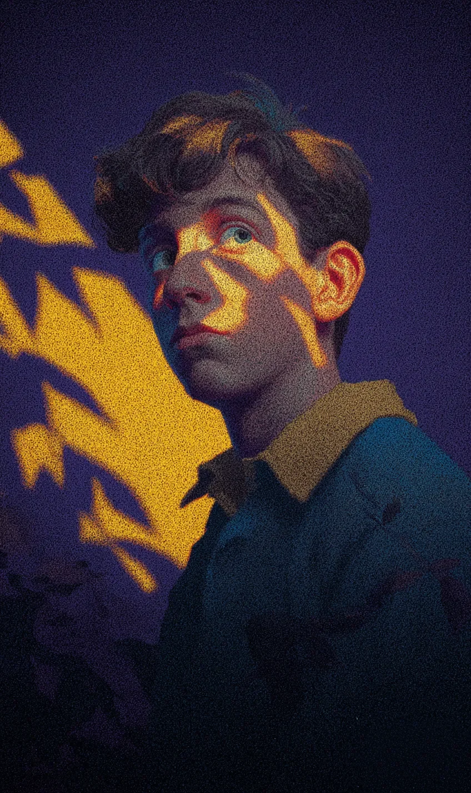

시우는 책을 정리하고 있었다.
[Siu was shelving books.]
오후 다섯 시였다. 서점은 조용했다. 마지막 손님은 한 시간 전에 떠났다.
[It was five in the afternoon. The bookshop was quiet. The last customer had left an hour ago.]
시우는 혼자 일하는 시간을 좋아했다. 오래된 종이와 잉크 냄새. 그것은 시우에게 가장 편안한 냄새였다.
[Siu liked working alone. The smell of old paper and ink. For him, it was the most comforting smell in the world.]
창문 밖에는 건물만 있었다. 나무는 하나도 없었다. 하지만 매일 이 시간에 금빛이 창문으로 들어왔다. 빛은 바닥 위에서 나뭇잎 모양을 만들었다.
[Outside the window there were only buildings. Not a single tree. But every day at this hour, golden light poured through the glass. It cast the shapes of leaves across the floor.]
시우는 처음에 이상하다고 생각했다. 나무가 없는데 나뭇잎 그림자라니. 하지만 그 빛이 너무 아름다워서 시우는 그냥 받아들였다.
[At first, Siu had found it strange. Leaf shadows with no tree to cast them. But the light was so beautiful that he simply accepted it.]
오늘도 빛이 왔다.
[Today, the light came again.]
금빛이 바닥 위에서 천천히 움직였다. 시우는 손에 든 책을 내려놓고 빛을 바라보았다.
[Golden shapes drifted slowly across the floor. Siu set down the book in his hand and watched.]
그때 무언가가 달랐다.
[Something was different.]
나뭇잎 모양이 아니었다. 글자 같았다. 시우는 눈을 크게 떴다. 바닥 위에 금빛으로 쓴 글자가 있었다.
[They were not leaves anymore. They looked like letters. Siu’s eyes went wide. Words, written in gold, lay across the wooden floor.]
“뭐지?”
[”What is this?”]
시우는 무릎을 꿇고 바닥을 자세히 보았다. 글자가 천천히 모이고 있었다. 하나의 문장이 되었다.
[He knelt and looked closely. The letters were gathering, slowly. They formed a sentence.]
“한번은 바다가 하늘을 만나고 싶었습니다.”
[”Once, the sea wanted to meet the sky.”]
이야기의 첫 문장 같았다.
[It read like the opening line of a story.]
시우는 고개를 들어 책장들을 바라보았다. 어떤 책에서 온 문장일까. 시우는 알 수 없었다.
[Siu raised his head and looked at the shelves around him. Which book had this sentence come from? He couldn’t tell.]
빛이 다시 움직였다. 글자가 바뀌었다.
[The light shifted. The words changed.]
“바다는 매일 파도를 높이 올렸습니다.”
[”Every day, the sea raised its waves higher.”]
시우는 숨을 멈추었다. 빛이 이야기를 들려주고 있었다.
[Siu held his breath. The light was telling him a story.]
그때 서점 문이 열렸다.
[Then the bookshop door opened.]
“어머, 아직 열었네.”
[”Oh my, you’re still open.”]
할머니 한 분이 들어왔다. 작은 할머니였다. 보라색 코트를 입고 있었다. 단추가 하나 없었다. 목에는 낡은 안경이 줄에 매달려 있었다. 흰 머리카락을 높이 묶고 있었는데, 연필 한 자루가 꽂혀 있었다.
[An elderly woman stepped inside. She was small, wrapped in a purple coat with a missing button. A pair of worn reading glasses hung from a cord around her neck. Her white hair was pinned up high, a single pencil tucked into the knot.]
“어서 오세요,” 시우가 말했다.
[”Welcome,” Siu said.]
할머니는 서점 안을 천천히 둘러보았다. 그리고 바닥의 금빛을 보았다.
[The old woman looked around the shop slowly. Then her gaze fell to the golden light on the floor.]
“아직도 있구나,” 할머니가 조용히 말했다.
[”Still here,” she said quietly.]
“네? 이 빛을 아세요?” 시우가 물었다.
[”Excuse me? You know about this light?” Siu asked.]
할머니는 웃었다. 주름 가득한 얼굴에 따뜻한 미소가 퍼졌다.
[The old woman smiled. Warmth spread across her wrinkled face.]
“아주 오래전에 이 서점에서 일했어. 그때도 이 빛이 있었어.”
[”A long time ago, I worked in this very shop. The light was here then, too.”]
시우는 놀랐다. “정말요? 이 빛이 뭔지 아세요?”
[Siu blinked. “Really? Do you know what it is?”]
할머니는 책장 사이를 걸었다. 손가락으로 책 등을 하나씩 쓰다듬었다.
[The old woman walked between the shelves. Her fingers brushed the spine of each book she passed.]
“이 서점에는 한 번도 읽히지 않은 이야기들이 있어,” 할머니가 말했다. “아무도 열지 않은 책들. 그 안의 이야기들이 슬퍼서 스스로 밖으로 나오는 거야.”
[”There are stories in this shop that have never been read,” the old woman said. “Books no one has ever opened. The stories inside grow sad, and they find their own way out.”]
시우는 바닥의 글자를 다시 보았다.
[Siu looked down at the words on the floor.]
“바다는 마침내 하늘에 닿았습니다.”
[”At last, the sea touched the sky.”]
“이야기가 스스로 나온다고요?” 시우가 물었다.
[”The stories come out on their own?” Siu asked.]
할머니는 고개를 끄덕였다. “책은 읽혀야 살아. 오래 읽히지 않으면 이야기가 빛이 되어서 책 밖으로 나와.”
[The old woman nodded. “A book is only alive when someone reads it. Left alone too long, the story turns to light and slips out from between the pages.”]
시우는 서점을 둘러보았다. 수천 권의 책이 빼곡히 꽂혀 있었다. 시우는 이 책들을 다 안다고 생각했다. 하지만 정말 읽은 책은 몇 권이나 될까.
[Siu looked around the shop. Thousands of books packed tight on every shelf. He had thought he knew them all. But how many had he actually read?]
“그러면 제가 그 책을 찾아서 읽으면요?”
[”Then what if I find the book and read it?”]
“빛이 책으로 돌아가겠지,” 할머니가 말했다.
[”The light would go back to its book,” the old woman said.]
할머니는 잠시 멈추었다. 창문 쪽을 바라보았다. 금빛 나뭇잎들이 할머니의 손등 위에서 춤추고 있었다.
[She paused. She looked toward the window. Golden leaves of light danced across the back of her hand.]
“하지만 빛이 없는 서점은 좀 슬프지 않을까?”
[”But wouldn’t a bookshop without this light be a little sad?”]
시우는 대답하지 못했다.
[Siu couldn’t answer.]
할머니는 다시 미소를 지었다. 그리고 천천히 문 쪽으로 걸어갔다.
[The old woman smiled again. Then she walked slowly toward the door.]
“잘 있어, 서점아,” 할머니가 작은 목소리로 말했다.
[”Take care, little bookshop,” she murmured.]
문이 닫혔다. 시우는 다시 혼자였다.
[The door closed. Siu was alone again.]
바닥을 보았다. 글자는 사라지고 다시 나뭇잎 모양이 되어 있었다. 금빛 나뭇잎들이 조용히 흔들리고 있었다.
[He looked at the floor. The words were gone. The light had returned to its leaf shapes, trembling gently, silently.]
시우는 가장 구석에 있는 책장으로 갔다. 먼지가 두껍게 쌓여 있었다. 손님이 거의 오지 않는 곳이었다.
[Siu walked to the farthest shelf in the corner. Dust lay thick. Customers almost never came here.]
시우는 한 권을 꺼냈다. 얇은 책이었다. 표지는 오래되어 색이 바래 있었다.
[He pulled out a single volume. It was thin. The cover was faded with age.]
시우는 첫 페이지를 펼쳤다.
[He opened to the first page.]
“한번은 바다가 하늘을 만나고 싶었습니다.”
[”Once, the sea wanted to meet the sky.”]
같은 문장이었다.
[The same sentence.]
시우는 미소를 지었다. 카운터로 돌아와서 의자에 앉았다. 서점 문은 잠그지 않았다. 아직 빛이 남아 있으니까.
[Siu smiled. He went back to the counter and sat down. He didn’t lock the door. There was still light left.]
시우는 읽기 시작했다.
[Siu began to read.]
금빛이 시우의 얼굴 위에서 천천히 움직였다. 나뭇잎이 글자가 되었다가, 다시 나뭇잎이 되었다. 빛과 이야기 사이를 오가면서.
[Golden light moved slowly across his face. Leaves became letters, then leaves again, drifting between light and story.]
서점은 조용했다. 하지만 외롭지 않았다.
[The bookshop was quiet. But it was not lonely.]